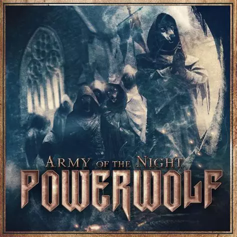
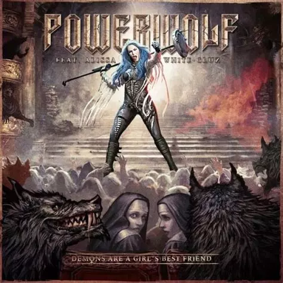
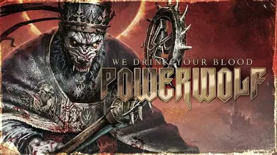
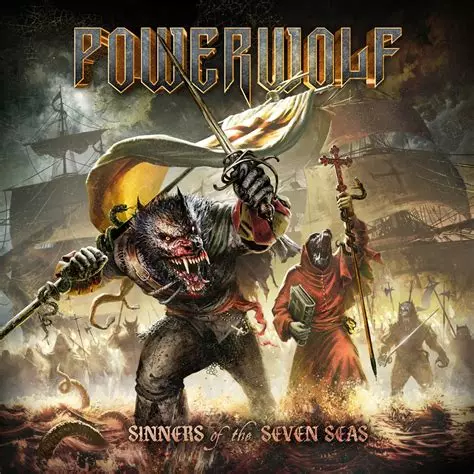
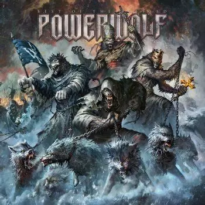
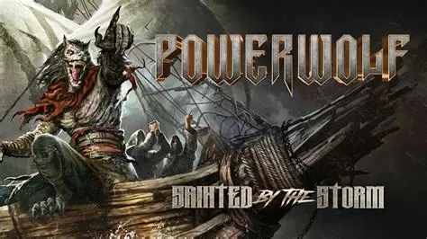
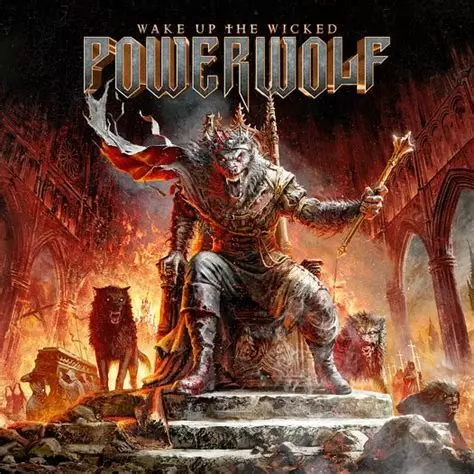

Powerwolf
Powerwolf est composé de Karsten Brill (Attila Dorn, chant), Benjamin Buss (Matthew Greywolf, guitare), David Vogt (Charles Greywolf, basse/guitare rythmique), Falk Maria Schlegel (claviers) et Roel van Helden (batterie).

BIO
Powerwolf est un groupe de power metal allemand, originaire de Sarrebruck. Le groupe, formé en 2003 par Charles et Matthew Greywolf, officie d'abord sous le label Metal Blade Records, puis sous le label Napalm Records à partir de 2012 avec l'album Preachers of the Night. Utilisant abondamment chœurs et orgues, les membres s'inspirent également, pour de nombreuses chansons, de chants religieux comportant parfois des parties en latin.
Les deux membres fondateurs, Benjamin Buss et David Vogt sont des amis jouant ensemble depuis longtemps. Ils jouaient notamment dans le groupe appelé Flowing Tears1. De leur décision de former un autre groupe naît Powerwolf. Pour l'activité du groupe, ils adoptent des noms de scène : Benjamin Buss devient Matthew Greywolf et David Vogt devient Charles Greywolf2. Peu après, les Greywolf recrutent les membres de leur ancien groupe, Red Aim. Cependant, chacun des membres du groupe s'est créé de fausses origines comme Attila Dorn qui raconte venir de Roumanie et que les autres auraient rencontré lors de vacances pour l'écriture de leur premier album.
Avec la passion de Dorn pour les légendes roumaines sur les loups-garous, le groupe sort son premier album Return in Bloodred le 4 avril 2005 sous le label Metal Blade Records, avec lequel ils signent un contrat. Un second album suivra le 7 mai 2007, Lupus Dei. Leur troisième album, Bible of the Beast, est commercialisé le 25 avril 2009. Le quatrième album, intitulé Blood of the Saints, est commercialisé le 29 juillet 2011 en Europe et le 2 août 2011 aux États-Unis.
En 2011, en raison du Wolfsnächte 2012, Powerwolf sort un split EP avec Mystic Prophecy, Stormwarrior, et Lonewolf. Cet EP présente des chansons inédites, dont le titre Living on a Nightmare. Des exemplaires de cet EP sont, à l'origine, distribués lors de l'achat des tickets pour la tournée Wolfsnächte de Powerwolf3 mais, depuis la fin de la tournée, ces exemplaires sont uniquement mis en vente sur le site internet de Powerwolf.
Le 13 mars 2012, le groupe sort Alive in the Night, le premier album live4.
Top Titres
- Army of the Night
 - Demons Are a Girl's Best Friend
 - We Drink Your Blood
 - Sinners of the Seven Seas
 - Sanctified with Dynamite
 - Sainted by the Storm

Dernière sorties
- Vargamo
sortie le 25 juillet 2024
 - We Don't Wanna Be No Saints
sortie le 25 juillet 2024
- Thunderpriest
sortie le 25 juillet 2024
Albums
- Return in Bloodred
Sorti le 4 avril 2005 - Lupus Dei
sorti le 7 mai 2007 - Bible of the Beast
sorti le 24 avril 2009. - Blood of the Saints
sorti le 29 juillet 2011
Artistes Similaire
- HammerFall

- Dragonforce

- Nightwish